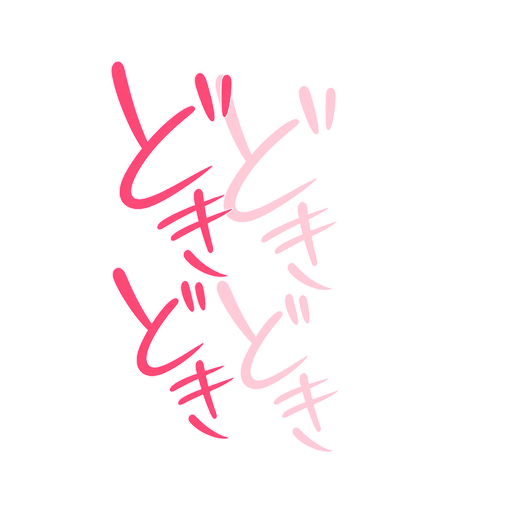
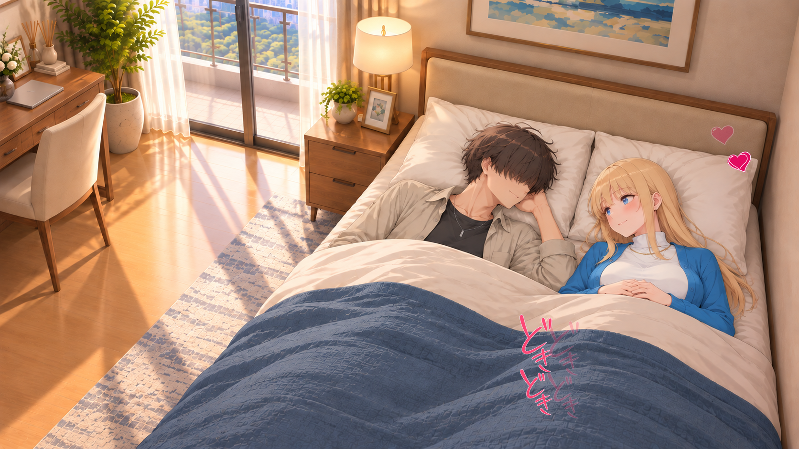
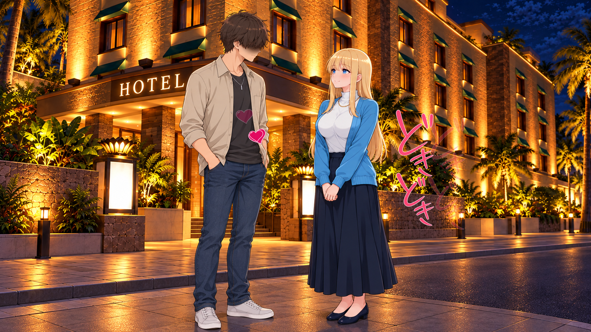

どきどき・ピンクと重なる連続表示
サイズ78%。0.96秒間隔・1.6秒寿命・0.64秒重複。文字が細かく震え、前の文字が消える前に次が現れます。人物・背景は静止。ゲーム表示は未検証です。
12場面の一覧
単体素材

GIF · PNG · WEBP
昼・枕にもたれて照れながら会話

PNG · GIF · WEBP
横になって添い寝・小さく笑い合う

PNG · GIF · WEBP
ホテル前・待ち合わせで少し照れる

PNG · GIF · WEBP